Префектура Окаяма · Акаива · суши
Тринадцать кусочков в доме на окраине: суши «Хисада» в Акаиве
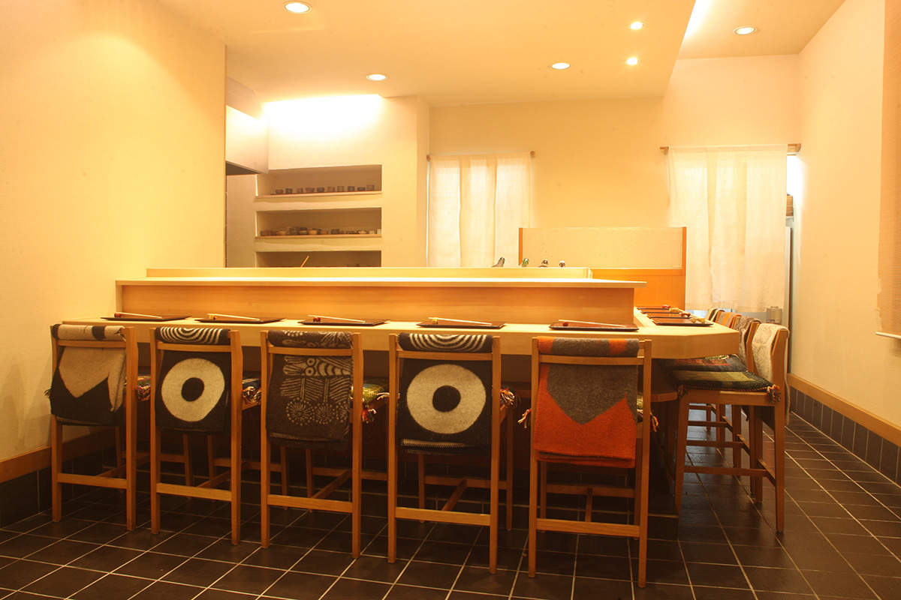
В жилом квартале города Акаива стоит частный дом, куда по пятницам и выходным съезжаются гурманы со всей Японии. Десять мест за стойкой, тринадцать кусочков нигири по одному и рыба Внутреннего моря, которая сюда не доедет в обычном порядке.
«Провинциальные суши нельзя недооценивать. Там есть вкус, который не узнаешь, пока сам не приедешь на место», так формулирует свой принцип автор цикла о ресторанах японской глубинки. В этот раз маршрут привёл в город Акаива, что в получасе езды на машине от станции Окаяма: маленький суши-ресторан «Хисада», ради которого путешественники закладывают в поездку отдельный день.
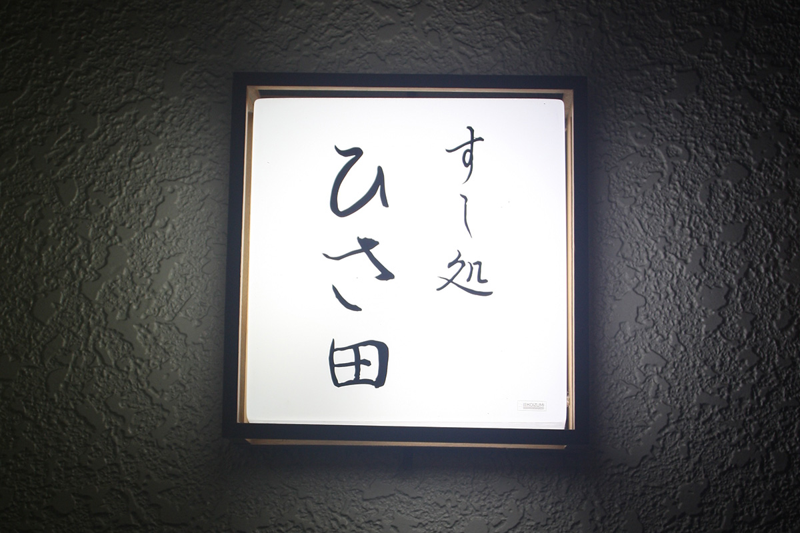
История
Дом родителей и ставка на «оммакасэ»
Хозяин Кадзуо Хисада открыл ресторан в 1994 году, в двадцать три года. Готовиться начал ещё в Осаке: учился в кулинарной школе итальянской кухне и одновременно работал в суши-баре дяди, известной эдомаэ-лавке «Суитое». Свой бизнес он с самого начала задумал в доме родителей, куда те переехали на покой, в глубине тихого жилого квартала. «В жилом районе спрос скорее будет на суши, чем на итальянскую кухню», рассудил он и открыл самую обычную суши-лавку.
Первое время Кадзуо Хисада сомневался, что ставить на меню: привычная эдомаэ-школа или рыба Сэтоути. Ответ подсказали выходные: владелец разъезжал по суши-барам Кюсю и побережья Внутреннего моря и заметил, что популярность лучших из них держится на местной рыбе. Так родилось решение: готовить только то, что не съесть без поездки в «Хисаду». В двадцать восемь лет он тяжело заболел. Врачи предупредили, что исход операции может отразиться на вкусовых ощущениях. На стол он лёг с обещанием себе: если выживу, меню будет только «оммакасэ», доверие к повару без компромиссов.
В начале 2000-х обычный вечерний чек вырос с пяти тысяч иен до десяти: «оммакасэ» как формат тогда в глубинке ещё не знали, и постоянные соседи отхлынули, зато издалека стали съезжаться новые гости. Слух «в Окаяме есть интересный суши-бар» распространялся кругами, и владелец сознательно поднимал и цену, и качество рыбы, как будто специально добавляя себе планку.
Рыба
«Икасикоми»: как рыба отдыхает от рыбалки
Главным делом Кадзуо Хисада считал доставку рыбы в идеальном состоянии. Натуральную рыбу скупают на рассветных торгах, к вечеру она уже теряет плотность. Владелец годами ездил по рыбацким портам и приёмным конторам Внутреннего моря вместе с доверенным рыботорговцем и объяснял метод «икасикоми»: выловленную рыбу сразу пересаживают в садки и не кормят, чтобы она выпустила стресс рыбалки. «Мясо становится плотнее, жир собраннее. Возни много, поэтому берутся за это неохотно», объясняет он. Репутация «Хисады» убедила поставщиков, и вместе с ней выросла и цена рыбы Сэтоути: ресторан стал витриной её качества.
Закуски
Восемь блюд перед нигири
Сеанс начинается сразу для десяти гостей: блюда выходят синхронно, и на каждое зал отвечает вздохом удовольствия. Закуски простые по виду и неожиданные по вкусу: к дарам моря подают непривычные травы и специи, а уже восемнадцать лет в меню живёт моцарелла местной молочной фермы «Ёсида», ради которой суши-фаны делают отдельные поездки.
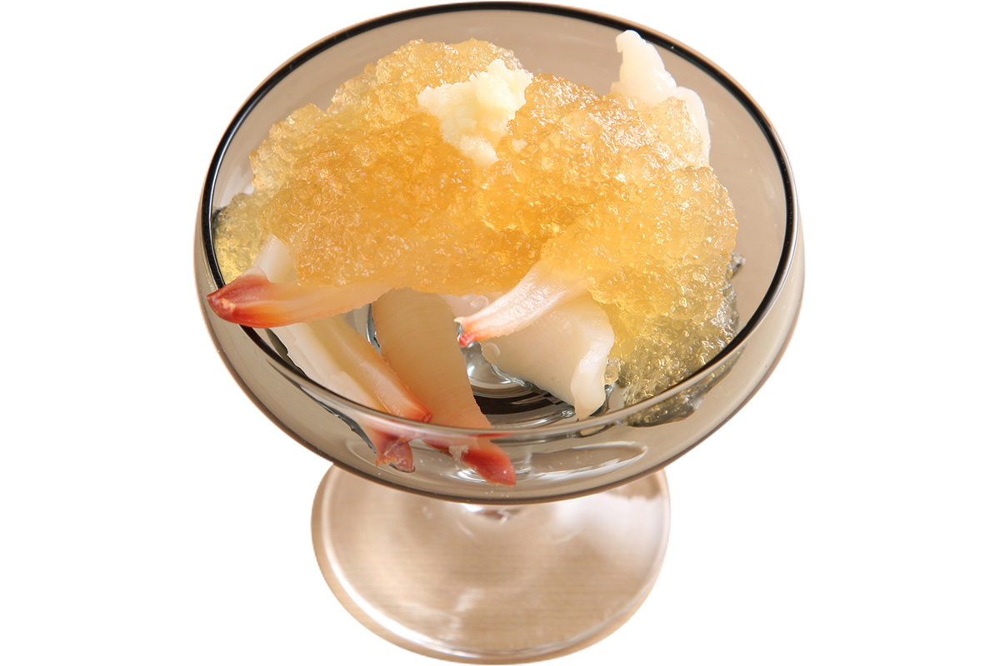
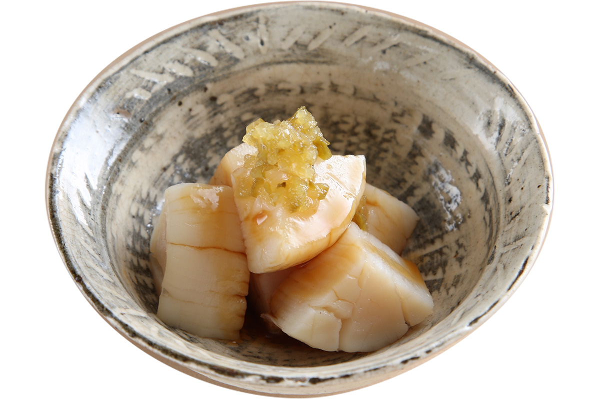
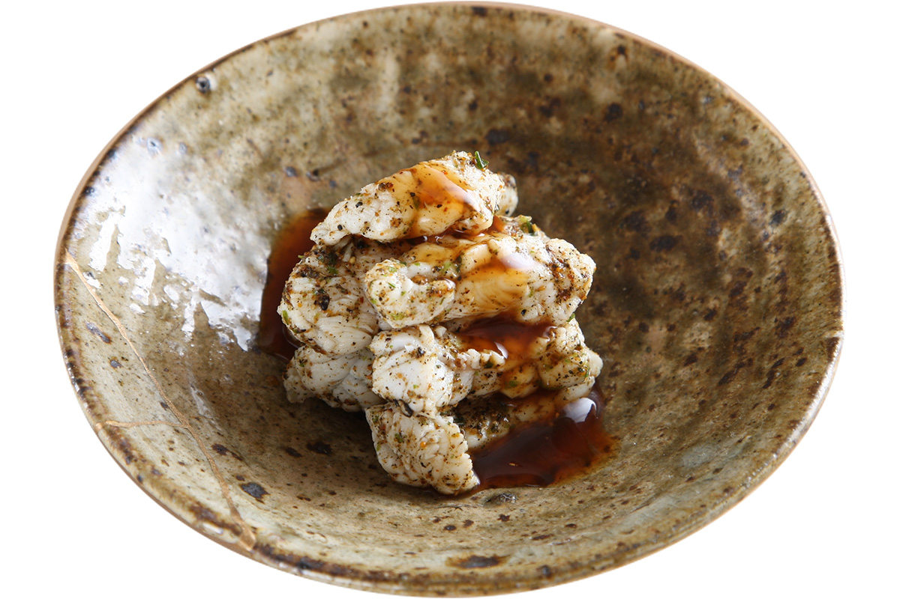
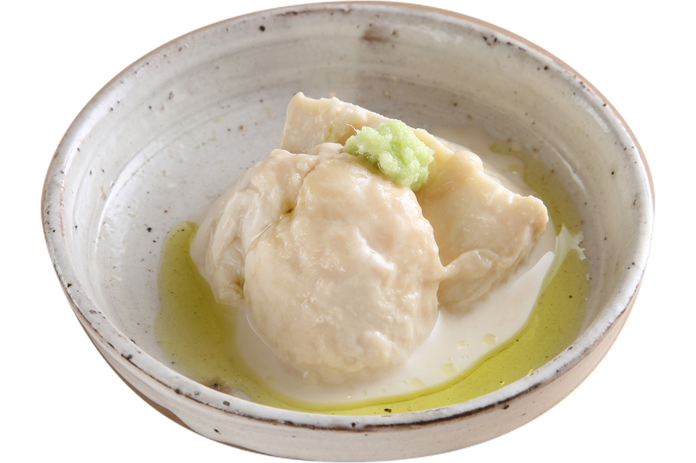
Нигири
Тринадцать кусочков
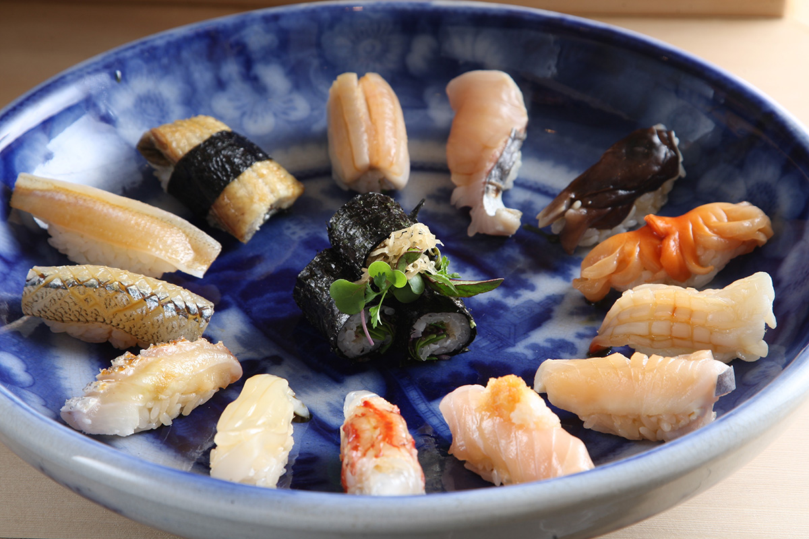
Каждый кусочек подают отдельно, один за другим. Число нигири зависит от состояния рыбы в этот день: в обычный вечер их тринадцать, а съев основную программу, можно попросить добавки того, что запомнилось больше всего.
- Савла на углях
- Савла на углях, второй способ
- Тригай
- Акагай
- Милугай
- Выдержанная савла
- Савла с острым дайконом
- Курумаэби
- Кальмар
- Тай
- Сайёри
- Кис
- Ао-унаги
- Ролл с травами
Савла тремя способами
Фирменная савла Окаямы в разгар сезона меняется вместе с погодой. Чаще всего её дают двумя способами: обжаренной на углях и с острой тёртой дайконом, а с ноября по март, в самый вкусный сезон, мастер маринует её в уксусе.
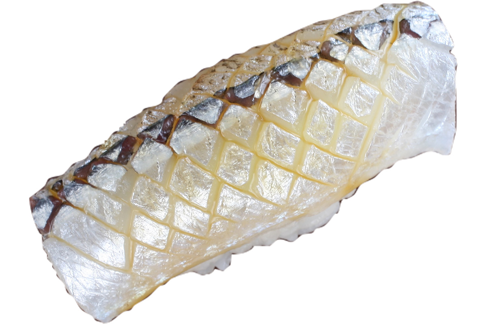
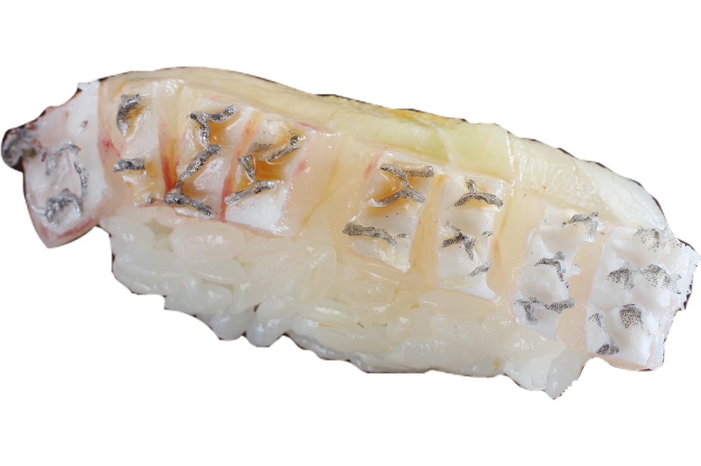
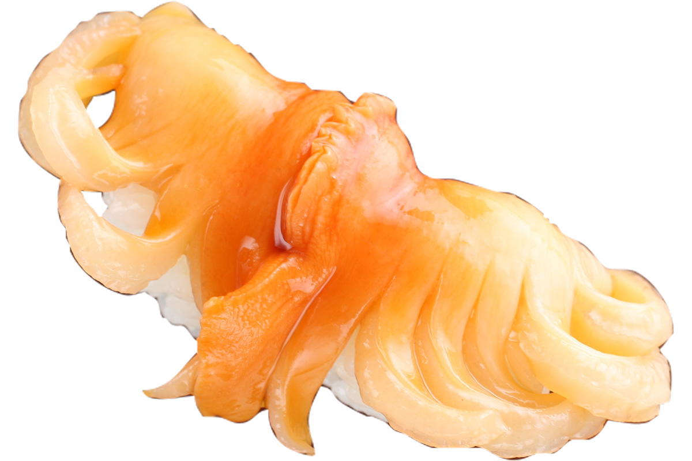
Белая рыба и кальмар
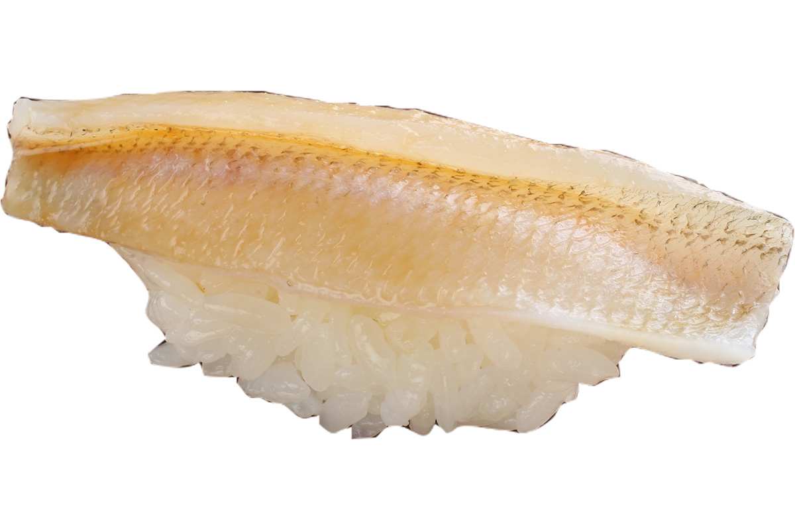
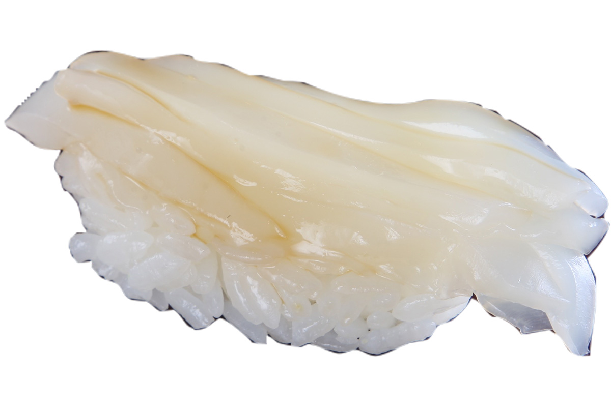
Тай Сэтоути солят и промывают в уксусе, чтобы вытащить сладость мяса. Кис из порта Симоцуи ошпаривают и выдерживают с солью и уксусом. Акагай из моря Хариманада радует цветом и ароматом, самый вкусный сезон ранняя весна.
Креветка и угорь
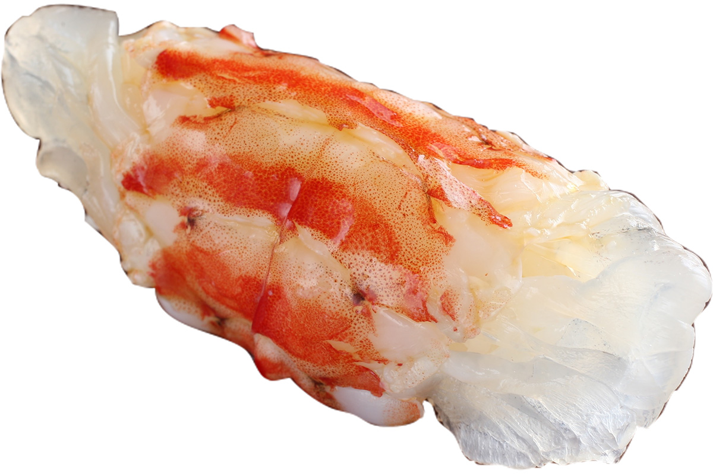
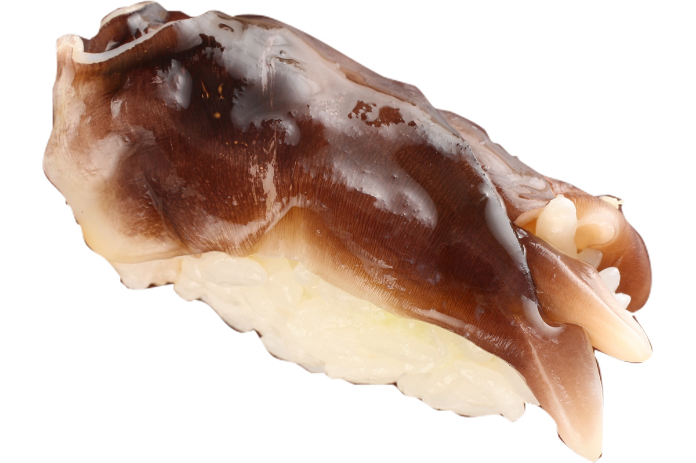
Торигай подают с марта по май: ракушку разрезают пополам и лепят двойной слой на рис. Милугай ранней весной ароматен, его смазывают глазурью из соевого соуса и подают сразу. Савла-абури: с куска снимают кожу, обжаривают жирную сторону и сбрызгают соком судати.
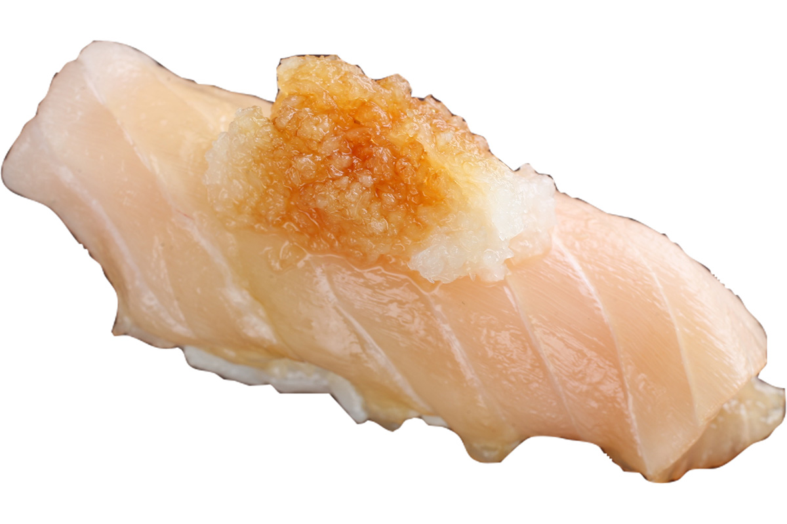
Десерт и напитки
Финальная сладость: джелато из анко. Начинку для него варит мать владельца: у нежных бобов чистый, «породистый» вкус. Сакэ берут у местных пивоварен: стоит попробовать «Сакэ-хитосудзи», сваренное на рисе оматии из Акаивы. Вино владелец подбирает сам, как человек, который его любит.
Ритм
Пять вечеров в неделю
Восемь лет назад Кадзуо Хисада сократил работу до пяти сеансов: пятница вечером, суббота и воскресенье днём и вечером. Решение принял на пике популярности, когда места раскупали изо дня в день, и это выглядело против всякой логики.
«Я хочу работать как можно дольше. Каждый раз держать одну и ту же планку требует силы. После сорока сохранить силы и азарт на одном уровне можно, если работать пять дней в неделю», объясняет он и добавляет, что, как марафонец, бережёт себя ради дистанции.
Так что работа мастера до сих пор движется вперёд. «Он всегда выкатывает какой-нибудь новый приём», удивляются и постоянные гости. Жёсткость ритма и есть страховка: пока держится темп, тринадцать кусочков не превратятся в легенду. Успевайте, пока «Хисада» работает в этом режиме.
Суши-докоро «Хисада»
- Адрес
- префектура Окаяма, город Акаива, Сакура-га-ока-ниси, 9-1-4
- Телефон
- +81 86-955-8585
- Часы работы
- с пятницы с 19:00, в субботу и воскресенье с 13:00 и с 19:00
- Выходные
- понедельник–четверг
- Цены
- курс 24 000 иен с налогом (по данным на 2018 год; актуальную цену уточняйте при бронировании)
- Места
- стойка на 10 мест, только по предварительной записи
Фото: Мунэаки Маэда.